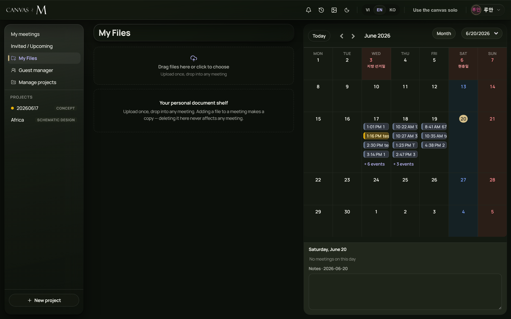

The meeting library
Every image, drawing, document and 3D model the room shares lives in one shelf. This chapter shows you how to add a file, find it again, place it on the canvas, and keep it from being deleted out from under you.
One shelf, shared by everyone
The library is the room's shared shelf of files. Anything you upload appears for every participant, and anything they upload appears for you. It is not your personal storage — it belongs to this meeting.
Four kinds of file are first-class here: ordinary images, DXF CAD drawings, PDF documents, and IFC 3D building models. Each tile carries a small type badge — IMG, DXF, PDF, IFC, or FILE for anything else. A file in the library is just a file; it does nothing until you place it on the canvas by clicking or dragging its tile.
Adding a file to the library shares it with the whole room. Placing it on the canvas is a separate, second step.
When you paste or drop an image straight onto the canvas, Canvas M quietly adds it to the library too, so peers receive it. App-generated assets — stickers, stamps, and the snapshot images behind PDF, DXF and IFC anchors — are deliberately kept out of the shelf so it stays clean.
Upload from your device
- Open the library panel in the meeting.
- Click + Upload image / DXF / PDF / IFC · or drag & drop at the top of the panel.
- Pick one or more files — the picker accepts images, .dxf, .pdf and .ifc. You can select several at once.
- Alternatively, drag files from your desktop straight onto the panel; the button changes to Drop files to upload while you hover.
- Wait for the tile to appear — IFC models are baked in the background and can take several seconds for large files.
→ Each accepted file becomes a tile in the shelf, tagged with your name as the uploader, and is shared with everyone in the room.
Only images, DXF, PDF and IFC are accepted. Drop anything else and you get “Only images, DXF, PDF and IFC are supported for now. Skipped: name”, and that one file is skipped while the rest carry on.

Reuse a file from “My Files”
- Click From my shelf (the folder-heart button next to Upload).
- The My Files picker opens with the hint Click to copy into this meeting.
- Click any row to copy that document into the meeting; its row shows Copying into the meeting… while it works.
- If the file is marked Private, confirm the prompt that warns everyone in the meeting will be able to see it.
- The picker closes and the copied file appears as a normal library tile, owned by you.
→ The meeting gets its own private copy of the document — baked and encrypted for this room. Deleting it here never touches the original on your shelf.
Each row shows the file kind, name, a Private or Sharable badge, and its size. If your shelf is empty you'll read “Your shelf is empty — upload from the home page, under “My Files”.”
From my shelf only appears for internal accounts. If you do not see it, your account simply isn't connected to a personal shelf — use the upload button instead; the result is identical.
Put a file on the canvas
- Click a tile to drop it at the centre of your current view.
- Or drag a tile onto the canvas to place it exactly where you let go.
- Images land at their natural size (capped so large pictures stay sane); DXF, PDF and IFC land at a sensible default frame you can resize with the normal selection handles.
- PDFs open on page 1 — advance pages later from the focus toolbar on the placed document.
- Click the tile again and Canvas M jumps to the copy already on the canvas instead of dropping a duplicate.
→ The file appears as a normal canvas element that everyone in the room can see, move, and draw on top of.
Pen strokes, shapes and stickers you add after a PDF or IFC sit on top of it via the usual “Bring to Front” ordering, because those anchors are real image elements on the canvas — not a separate overlay.
Search, filter, sort and view
| Control | What it does | Notes |
|---|---|---|
| Search box | Filters tiles by file name or uploader | Placeholder reads “Search by name or uploader…”; matching is live as you type |
| Filter chips | Show only one type: All, DXF, IFC, PDF, Image, Other | Each chip shows a count; chips with zero files are hidden, but All always shows |
| Sort menu | Orders tiles | Newest (default), Oldest, Name A-Z, Uploader |
| Grid button (▦) | Shows tiles as a grid | The default layout |
| List button (☰) | Shows tiles as rows with a relative timestamp | Times read “just now”, “2m”, “3h”, “5d”, then a date |
| Group button (⌘) | Groups files under collapsible type headings | Sections: CAD drawings, IFC models, PDF documents, Images, Other files — click a heading to collapse it |
The search box, chips, sort and view controls only appear once the room has at least one file. None of these settings are saved — each time you open the meeting the library starts on Newest, grid view, All files.
The three resting states
“No files in this room yet.” with the hint “Drag images here or paste/drop onto the canvas to get started.” The toolbar controls stay hidden.
“No files match the filters.” with a Clear filters button that resets the search box and the chip back to All.
After the meeting ends the upload button is disabled with the tooltip “The meeting has finished — the library is read-only, uploads are disabled.” You can still place existing files on the canvas.
Use these to tell apart “nothing here yet” from “your filter hid everything” — the first means upload something, the second means clear your filters.
Locking, deleting, and linking
Each tile carries three actions. Hover a tile to reveal them: a link button (🔗), a lock toggle (🔓 unlocked, 🔒 locked), and a delete button (✕).
Lock a file to stop anyone else removing it. Once locked, only the person who locked it or the original uploader can unlock it again — anyone else trying gets “Only locker (who locked it) or uploader (the uploader) can unlock it.” Delete removes the file from the library and every copy of it on the canvas, for everyone, after a confirmation. If the file is locked by someone else the delete button is disabled and reads “File is locked by name”; click it anyway and you're told to ask them to unlock it first. The link button connects the file to a text element you've selected on the canvas, so the file can be mentioned from there.
Locking protects a file from deletion; it does not stop people placing it on the canvas.
Deleting a file is destructive and shared — it pulls every on-canvas copy out from under every participant. The confirmation spells this out: “Every image using this file on the canvas is removed too (for everyone).” There is no undo from the library.
Library troubleshooting
My file was skipped on upload — The type isn't supported — only images, DXF, PDF and IFC are accepted
Convert it or upload a supported format; you'll see “…Skipped: name” for each rejected file → 11.2
“Couldn't process IFC file” — The IFC model failed to bake (corrupt or unsupported geometry)
Re-export the IFC from your authoring tool and try again; other files in the same batch are unaffected → 11.2
The upload button is greyed out — The meeting has finished — the library is read-only
You can still drag existing files onto the canvas; uploading needs a live meeting → 11.7
Clicking a tile doesn't add a second copy — That file is already on the canvas; Canvas M scrolls to it instead
This is intended — drag the tile if you genuinely want it in a new spot → 11.5
I can't delete a file — It's locked by someone else
Ask the person who locked it, or the original uploader, to unlock or delete it → 11.8
Search controls are missing — The room has no files yet
Upload or drop a file — the toolbar appears once there's at least one → 11.6
Search and filter settings reset every time you reopen the meeting — that is by design, not a fault.